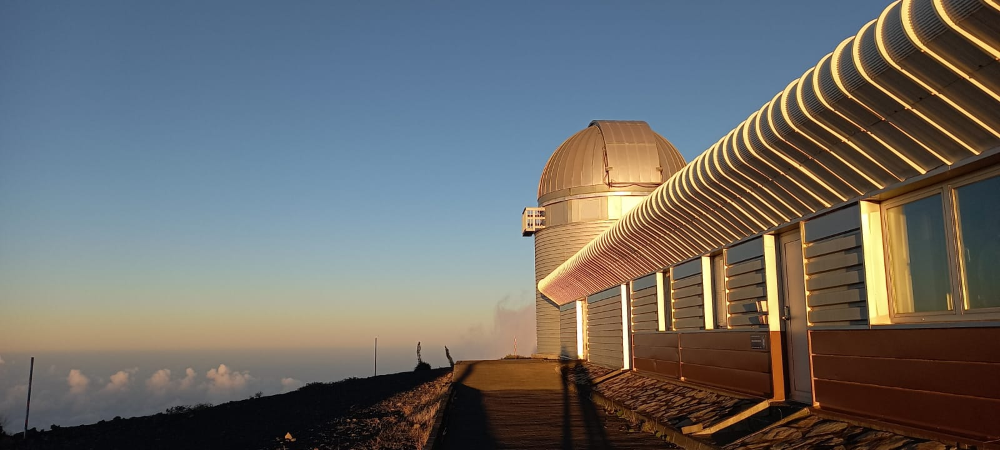
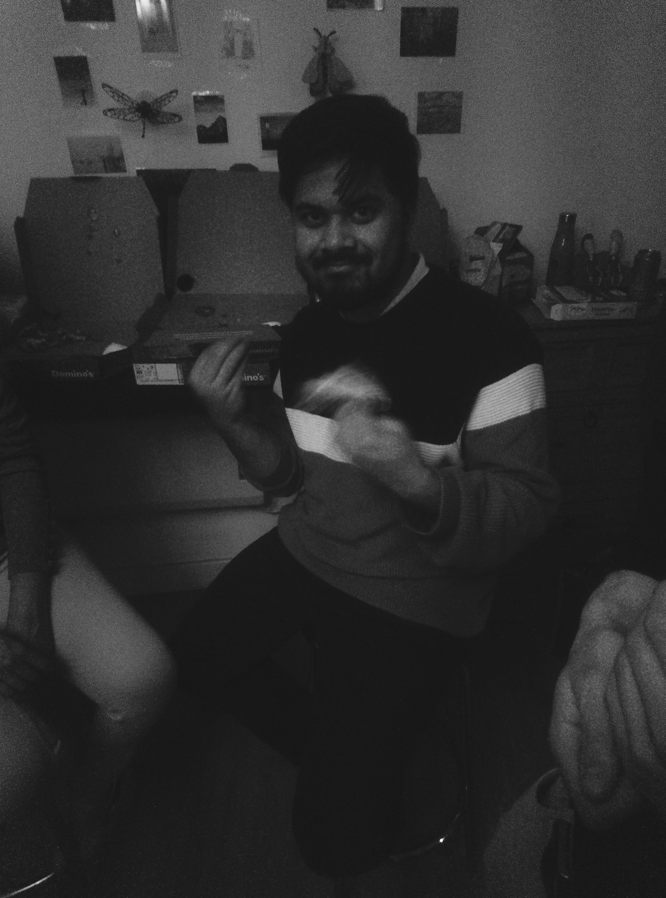

Research
Find out more about my research interests, ongoing projects, and publications.
View ResearchI am an Astrophysics PhD student in the School of Mathematics, Statistics and Physics at Newcastle University, UK. This website presents my research activities, publications, computational work, and professional profile. For collaborations, research discussions, or professional opportunities, please feel free to email me.

Find out more about my research interests, ongoing projects, and publications.
View Research
Explore my software development, data-analysis pipelines, and scientific computing work.
View Code
Learn more about my academic journey, professional profile, and contact details.
Get in TouchTwo versions of my CV are available depending on the context of interest.